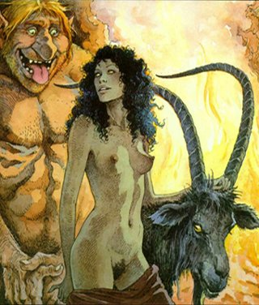

Moje postavy

Thomas Tamavenk
- trollim rodicum narozeny troll. Otec technik, jej vzdy vedl ke kutilstvi pro ktere mel mlady velke nadani. Schopnost najit a opravit chybu temer v jakemkoli mechnickem nebo elektronickem zarizeni, byla v uz v Tomovych patnacti temer zazracna. Kdyz se potom otec i se starsim bratrem zabili v aute, dostal se Tom do stinu, kde se pokousi uzivit svou technickou zrucnosti.
Jasmina Amirah Shaharazad aka Nova - puvodnim urcenim : konkubina vlady Damasku, specializovana na spionaz.
V dnesni dobe furie posedla touhou po pomste na organizaci, ktera zabila jeji rodice. Luxusni prostitutka a tanecnice v klubu Dark Secret, manzelka Vlada Hromady.
Vlado Hromada - slovak, datovy prechovavac a paserak, gotic punker, masochista, fetak heroinu, alfa decker s mozkem plnym cyberware. Stastny manzel Jasminy Amirah Shaharazad.
Postavy ostatnich hracu
Rufus (Sorbak) - Rastaman taxikar, bez cyberware, s sestiranym revolverem za opaskem. Neustale chvali Jehovu a zloreci Babylonu. V soucastne dobe NPC, ktere se v nejake male obmene vyskytuje v kazdem meste kde maji taxiky.
Urscumung (Sorbak) - RIP - ork. max power. Tohle je presne ten typ postavy, ktery si vytvori nekdo, kdo v DrD hrava barbarskeho zabijaka s kyjem. Tezky bojovy pancir, kulomet, 2 tezke pistole. Reflexka: 2. - v soucastne dobe RIP by Marty Casper.
Nick SlaughterHouse aka Polozmrd (Sorbak) - temny elf, lidsky pozer, masozrout, child killer, sberac vybavy, London City Kid, vyleceny kokainista a alkoholik.
John Viper (Sorbak) - 160 cm vysoky cernoch, saman hadiho totemu
Alan - (Mates) - RIP - Puvodne gang member archetyp. Neustale sjizdel BTL (better than life) chipy. Kdyz se GM zeptal co dela, odovidal pravidelne: "Ja? Ja si dam do hlavy dalsi cip."
Johny (Bota) - tichy, schopny a nenapadny kouzelnik se sklony k chaotickemu dobru
Nicolai Chauchesku (Balu) - rumunsky eko-punker, straslive rychly britvak
Marty Casper (Elf) - RIP - elf, umel odevseho kousek, ale nic poradne. Diky jedne nestastne prihode, byl znasilnen masovym vrahem a prisel o ruku. Tu nahradil kybernetickou protezou se kterou se vsak nikdy nesmiril. Miloval Ferrari, ale vzdy jej vcas rozmlatil. Vzdycky mlel o tom jak neco udela, ze to udela takhle a takhle, ale nerekl co vlastne udelat chce. Lama, co 3x spadne ze zebriku vedouciho na strechu, kdyz ostatni bojuji ve sklepe.
Dimitri (Elf) - zase jednen, co umi odevseho kousek, neustale mluvi o Velkem a Bohatem Bratru, nekde v Roztoku nad Donem, jako o pani Colombove. Pri jednadnani s kymkoli neustale prekracuje hranice dobreho chovani, coz spolecne s jeho relativne velkym bohatstvim (nemluve o tech peti mrtvej policajtech) nejspise brzy zapricini jistou nestastnou nahodu.
Eh... RIP by pachatel neznamy. Zemrel na jed.
Jose Armando - (Elf) - zda se, ze konecne jedna Elfova postava, ktera by mohla mit zivotaschopnost, tezko rict. Kazdopadne Madridsky kytarista, podomni prodavac domacich spotrebicu a zabijec psu. No neber to ne?
Mao-te (Slunko) - "drubezi saman" : "Ta moje postava je uplne na hovno, kdyz, vyvolam ducha, tak me zabije, neubranim se, protoze me sejme kazdej samuraj s reflexkama...". Neustale se menici, neustale nespokojeny, mnoho postav v jedne.
Garnath Langusra (Prawitz) - podivna postava, ktera by uz mohla byt povazovana za archetyp, arab s kalasnikovem a vybusninami ("Bylo by to uplne v pohode, kdybychom meli tank")
Tenochtitlan (Prawitz) - Child of nature, indian, vyhorely saman se sklony manipulovat vecmi pomoci magie, tak aby od nekud padaly, nebo o neco narazely.
("Tywole, ti samurajove jsou banda dementnich frenetiku.")
Ashitaka (Boxy) - Japonec, dealer chemikalii, zabijak. Nicmene predevsim velice schopny psycholog a organizator, cekatel na post alfa hackera.
Dulezite postavy, ktere ziji v nasem svete (NPC)
Timmy - nikdo vlastne nevi, co je to za cloveka, ale rika se, ze by se snad mohlo jednat o jakehosi fetaka, ze dvacateho stoleti, o nejakeho Learyho.
Timmy, je predevsim vedec, spicka v oblasti cyberware, hrana pokroku. Nikdo jiny nedokazal udelat to co on, tedy nahradit sve telo i casti mozku v takove mire a prezit to. Jeho hlavnim zdrojem prijimu, je pristroj -cyberneticka droga- zvany Drat, ktera se pripojuje primo k mozku a je pomoci ni mozne dosahnout v podstate jakehokli pocitu, ktery mozek dokaze zpracovat, vcetne vsech kombinaci.
Pro potreby naseho hrani, byla tato postava definovana jako nesmrtelna, nicmene po jiste serii akci, byl Timmy unesen, neznamou a velice mocnou organizaci a nikdo nevi, kde se v soucastne dobe nachazi jeho genialni mozek.
Packa - Timmyho pes, ceskoslovensky ovcak, ktereho Tim nasel umirajiciho na skladce, s rozdrcenou pateri, lebkou a packami. Protoze zrovna potreboval "dobrovolnika", pro sve pokusy s kosternimi implantaty a protoze Packuv mozek byl neporusen, rozhodl se mu zachranit zivot.
Pokusy se zdarily a Packa dostal nove telo. Je s podivem, ze serie experimentu, nezanechala na psi osobnosti, zadne vazne nasledky, podobne jako ani na jeho panu. Packa, se tedy stal Timmyho nejvernejsim pritelem a ochrancem a take potvrdil rceni "Jaky pan, takovy pes."
Narozdil od Timmotyho, se Packu podarilo zachranit i kdyz se ve velice zubozenem stavu, ktery snad bude jednou moct napravit jeho nezvestny pan.
Pan v cernem - archetyp agenta Smida, vsudypritomy, neustale se vyptavajici, nebezpecny. Zda se, ze prostupuji kazdou jednou akci, jako zastupci jakesi nezname organizace, kterou pred nekolika lety nevedomky napadli zakladajici clenove shadowrunnerskeho tymu.
Je temer jiste, ze prave oni maji prsty ve zmizeni Timmotyho.
Cerni orkove - archetyp vojaka, at jiz magicky aktivniho, nebo dokonale vylepseneho cyberware. Velice nebezpecna soucast hierarchie, one organizace, jejimiz prislusniky jsou i pani v cernem.
Nekdo dalsi? - zda se, ze vsechno smeruje k jakymsi vyssim planum. Pro koho a proc neni zatim uplne jasne. Neni ani jasne, jestli se vubec tyto plany tykaji naseho teamu, nebo jestli neni tento, spise okrajovym problemem, bytosti, ktere maji moc.
Divka se stribrnyma ocima (Kahira), Lizzy aka 97 Urscumungova (Seattle), eBony Clide (London)... - dohazovaci, lide i nelide, kteri obcas neco vedeli a toto sve poznani byli ochotni poskytnot za jisty drobny uplatek postavam...
Spatny Zpravy - archetyp vyhazovace, v kazdem podniku, kde je jej treba.
Irving - starej zid, ktery snad v kazde zemi sveta, v kazdem meste a v kazdou hodinu prodava za starou mechanickou kasou alkohol, uplne komukoli.
Mista
Dark Secret - nejlepsi a nejdrazsi bordel v Londnu, s kompletnim servisem bez ohledu na rasy a pohlavi. Pokud dokazete zaplatit dost, neexistuje bezpecnejsi misto ve meste. Take velice draha a diskretni kosmeticka klinika.
Yoshimotova opravna hi-tech - podivne misto kdesi v Londnu, kde pry opravi cokoli, cena zavisi na rychlosti a kvalite, jako ostatne vzdycky
Costa -Kosteny- kafe - kdysi soucast site kavaren Costa Kafe, ne nepodobnych McDonalds, po jejim rozpadu unikatni matrixova kavarna s neregistrovanymi pripojkami (trix: 1Y/1s)
22/09/04 00:49:11

{kind=link}
{kind=link}
{kind=link}
{kind=link}
{kind=link}